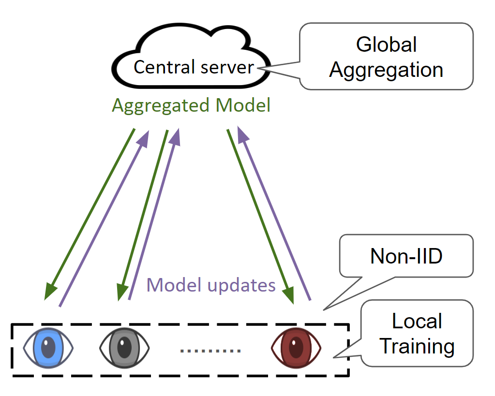

Federated Learning for Appearance-based Gaze Estimation in the Wild
Mayar Elfares, Zhiming Hu, Pascal Reisert, Andreas Bulling, Ralf Küsters
Proceedings of the NeurIPS Workshop Gaze Meets ML (NeurIPS GMML), 2023: 20-36.

Abstract
Gaze estimation methods have significantly matured in recent years but the large number of eye images required to train deep learning models poses significant privacy risks. In addition, the heterogeneous data distribution across different users can significantly hinder the training process. In this work, we propose the first federated learning approach for gaze estimation to preserve the privacy of gaze data. We further employ pseudo-gradients optimisation to adapt our federated learning approach to the divergent model updates to address the heterogeneous nature of in-the-wild gaze data in collaborative setups. We evaluate our approach on a real-world dataset (MPIIGaze dataset) and show that our work enhances the privacy guarantees of conventional appearance-based gaze estimation methods, handles the convergence issues of gaze estimators, and significantly outperforms vanilla federated learning by 15.8% (from a mean error of 10.63 degrees to 8.95 degrees). As such, our work paves the way to develop privacy-aware collaborative 14 learning setups for gaze estimation while maintaining the model’s performance.Links
BibTeX
@inproceedings{elfares22federated,
title = {Federated Learning for Appearance-based Gaze Estimation in the Wild},
author = {Elfares, Mayar and Hu, Zhiming and Reisert, Pascal and Bulling, Andreas and Küsters, Ralf},
year = {2023},
booktitle = {Proceedings of the NeurIPS Workshop Gaze Meets ML},
pages = {20--36}}